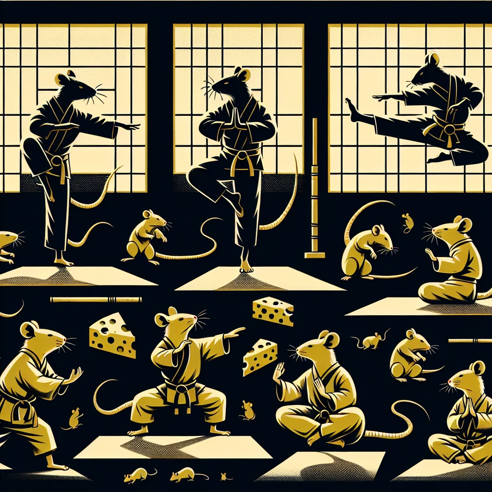

{kind=link}
{kind=link}
Martial arts are taking Ratopolis by storm. This trend sees both young and old citizens flocking to dojos to learn ancient techniques and new disciplines. The highlight of this surge in interest is the annual Rat-Fu Championships, a prestigious event where the finest rat martial artists showcase their skills.
The origins of martial arts in Ratopolis are historic, tracing back to ancient rat societies where these practices were not just for self-defense but were also steeped in cultural values. Elder Squeakson, a rat historian, explains, "Martial arts have always been more than a physical endeavor; they are a way of life rooted in our tradition."
Training for martial arts in Ratopolis is rigorous. Young whisker warriors, like Whiskers McSqueak, put in countless hours perfecting their craft. "Martial arts have taught me discipline and respect," Whiskers says, after a long day of training. "It's more than just fighting; it's about personal growth."
Participants follow strict routines, incorporating techniques from various styles. Dojo Master Cheddar elaborates, "Our young warriors are dedicated. They focus on both mental and physical strength, blending agility with wisdom."
The Rat-Fu Championships, a cornerstone of this martial arts renaissance, brings the community together. The event, established decades ago, highlights the dedication and prowess of its participants. "The Rat-Fu Championships are the highlight of the year," Master Cheddar emphasizes. "It's amazing to see the dedication and skill of our young warriors."
This growth in martial arts extends beyond individual achievement. It has rippled through the community, fostering unity and pride. Many local initiatives support martial arts programs, ensuring young rats have access to training. Parents, like Mrs. Nibbles, appreciate the positive impact. "I never thought I'd see my little ones so passionate about something," she chuckles. "They've really taken to it like cheese to a trap!"
Experts argue that martial arts provide numerous benefits. Instructor Scratchings highlights, "Martial arts instill important values in young rats. They learn patience, discipline, and respect. These traits stay with them for life."
However, this rising trend is not without its critics. Some argue that the intense focus on martial arts might distract young rats from academic pursuits. Dr. Paws, a local educator, voices concern, "While martial arts have their benefits, we must ensure a balanced approach. Education should remain a priority."
Despite these concerns, the positive impact of martial arts on physical health and mental well-being is undeniable. The community's support shows a commitment to nurturing well-rounded individuals. Mrs. Nibbles adds, "It's incredible to see the confidence and discipline my children gain. They balance their studies and martial arts beautifully."
Ratopolis looks forward to the future of martial arts, and the anticipation for the upcoming Rat-Fu Championships is palpable. The event promises to be a showcase of talent, hard work, and community pride.
In closing, martial arts have become a cherished part of Ratopolis culture, fostering a strong sense of unity and growth. The dedication of young whisker warriors serves as an inspiration to all, encouraging everyone to support this dynamic aspect of our community. Attending the Rat-Fu Championships is not just a sporting event but a celebration of our collective spirit.
So, as we cheer on the young martial artists who grace the dojo floors, let us reflect on the values they embody and the sense of community they help strengthen. Let’s come together and celebrate the extraordinary journey of Ratopolis' whisker warriors.
Looking for more in-depth news and exclusive content? Follow RAT TV for real-time updates, behind-the-scenes insights and the latest breaking news.
Whisker Warriors: The Rise of Rat Martial Arts
Ratopolis citizens are increasingly embracing martial arts, with young whisker warriors dedicating themselves to training for the esteemed Rat-Fu Championships, fostering community spirit, physical fitness, and cultural pride.
3 minute read •
Comments

Comments